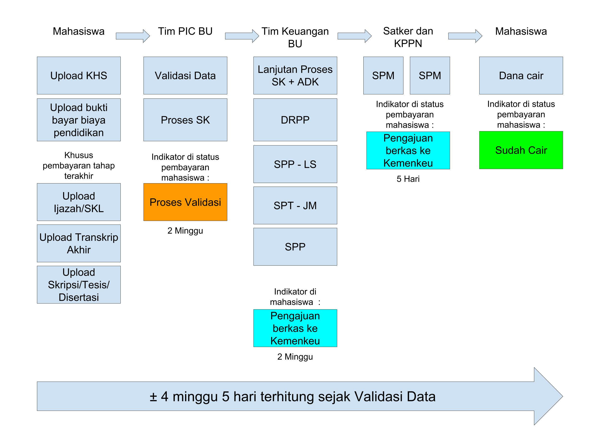

Tata Cara Pelaporan
Sesuai alur proses diatas, pencairan beasiswa dilakukan maksimal 4 minggu 5 hari setelah Validasi Data oleh Tim Persons In Charge BU.
Bagi para penerima beasiswa, untuk melaporkan perkembangan studi sebagai syarat pencairan harap perhatikan langkah berikut:
- Semua laporan upload di https://report.beasiswaunggulan.kemdikbud.go.id
- Untuk Laporan Perkembangan Studi, upload KHS sesuai kolom semester yang diminta. KHS dapat berupa screenshot Siakad Kampus.
- Untuk Laporan Pertanggungjawaban Dana, upload bukti bayar biaya pendidikan sesuai kolom semester yang diminta (hanya bukti bayar biaya pendidikan saja, bukti pemakaian biaya hidup dan buku tidak perlu upload)
- Di menu Dashboard dapat melakukan download kontrak. Selain itu, proses pencairan juga bisa dipantau di menu Dashboard (apabila data yang ditampilkan salah, harap lapor beasiswa.unggulan@kemdikbud.go.id)
- Bagi peserta yang ingin mengubah rekening, wajib update data rekening terbaru beserta scan buku tabungan di menu Update Rekening
- Bagi mahasiswa S2 maupun S3 yang tidak mengambil mata kuliah melaporkan perkembangan studi berdasarkan tahapan perkuliahan yang diatur oleh program studi, dalam bentuk surat keterangan resmi yang dikeluarkan oleh perguruan tinggi
- Sangat dianjurkan bagi peserta penerima Beasiswa Unggulan untuk mengaktifkan fitur SMS/Internet banking.
Khusus pencairan tahap terakhir, harap perhatikan langkah berikut:
- Wajib upload ijazah/SKL (Surat Keterangan Lulus) pada jenjang pendidikan berjalan di menu Upload Ijazah
- Wajib upload Skripsi untuk S1, Thesis untuk S2 atau Disertasi untuk S3 pada jenjang pendidikan berjalan di menu Upload Skripsi/Thesis/Disertasi. File dapat berupa jurnal atau abstrak.